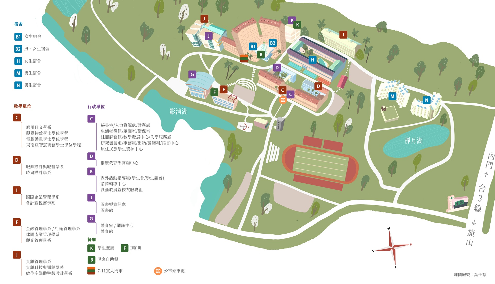

教授展示版｜正在載入公開活動快照。
正在載入地圖活動…

正在載入活動…
請試試其他關鍵字，或清除部分篩選條件。
這是學生前台的靜態資料快照，不提供登入、活動管理或自動更新。
活動依臺灣目前日期分類，未知日期另列。報名、名額與活動異動請以官方來源為準。
地圖可選擇2026/11/20並點D棟，查看國際生聚餐；不會把歷史活動冒充為今天。
已核對9筆活動海報並依使用者確認用於本校專題；華泰因時間衝突、斜槓人生因尚無已確認海報，保留佔位。校園地圖經使用者確認可供本次教授展示，保留原署名。